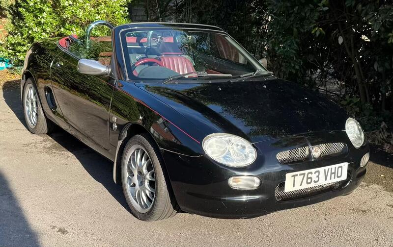
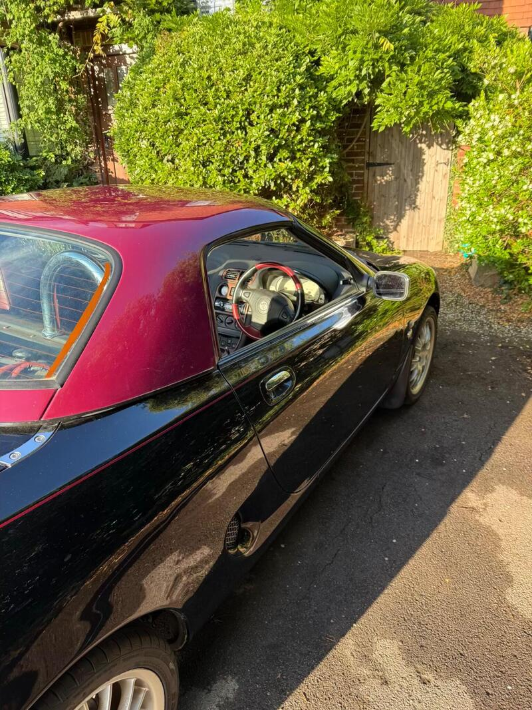
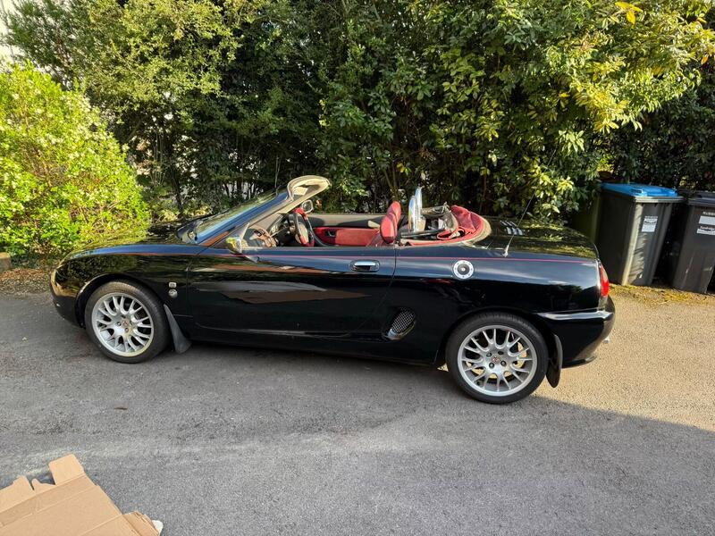
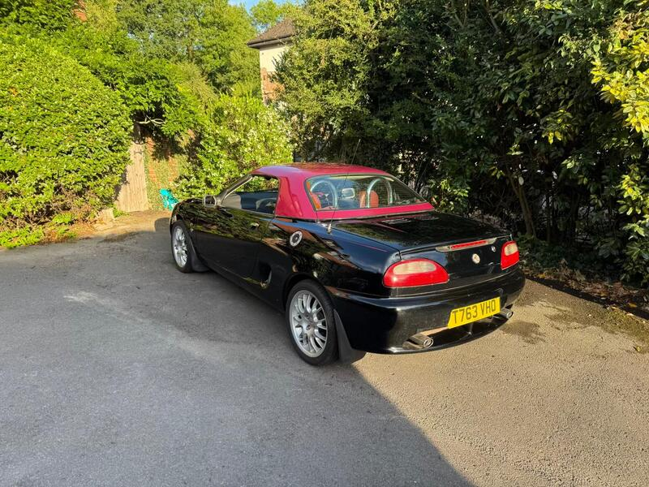

Seller photos from the AutoTrader ad.
MG MGF 1.8i
Cheap with a hardtop. Budget for a hood and head-gasket checks.
Key facts
| Price | £1,750 |
|---|---|
| Year | 1999 |
| Miles | 69,500 |
| Model | MG MGF 1.8i |
| Colour | Black |
| Registration | 1999 (T reg) |
| Owners | 8 owners |
| Service history | Not stated |
| MOT | May 2027, advisory-free (ad) |
| Seller | Private |
| Location | Oxted |
| From GU7 | 27 mi (AutoTrader) |
| Checked | 13 Oct 2026 |
Why buy it
- Limited edition no. 1382 of 2000 with hardtop (ad)
- New brakes all round (ad)
Things to check
Soft top in poor condition, no service history (ad)
Ad ID suggests it was listed in Sep 2025, so it's been unsold a long time
- MG MGF / TF weak spots
Can be serious underneath; mild-steel underfloor coolant pipes rust; radiators corrode. K-series head gasket – want proof of MLS gasket, revised oil rail, replaced dowels; VVC mechanism; Hydragas suspension on MGF.
Seller says (extract)
“Number 1382 of 2000, this MGF is equipped with the very useful hard top. Presents in good condition with gleaming paint. While it's 27 years old, mileage is very low and it drives and handles well. On the downside, the fabric roof is in poor condition (although the frame is sound). I also have found no service history although the brakes have been attended to recently (fresh discs and pads all round with new callipers on the front) and the matching tyres all round have loads of tread. Advisory free MOT until May 2027. I bought on a whim, but simply don't have the time to enjoy it so it needs a good home.…”